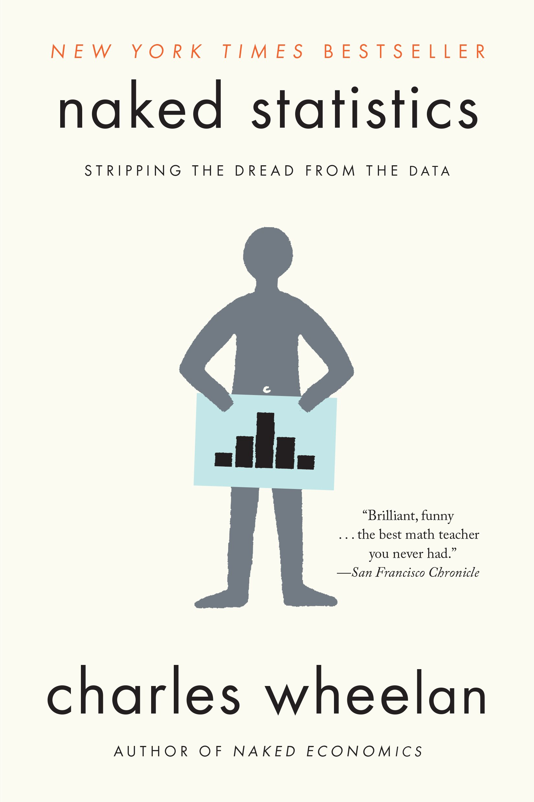
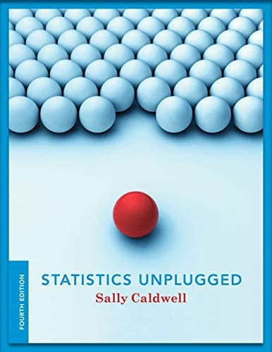

-

Naked Statistics
Charles Wheelan
Сфера статистики, яка колись вважалася нудною, стрімко перетворюється на дисципліну, яку Хел Варіан, головний економіст Google, назвав «сексуальною». Від середніх показників і політичних опитувань до ігрових шоу та медичних досліджень — застосування статистичних даних у реальному світі продовжує зростати семимильними кроками. Як ми можемо викрити школи, що обманюють на стандартизованих тестах? Як Netflix знає, які фільми вам сподобаються? Що є причиною зростання захворюваності на аутизм? Як показує автор бестселерів Чарльз Вілан у «Голій статистиці», правильні дані та кілька добре підібраних статистичних інструментів можуть допомогти нам відповісти на ці та інші запитання.
Вілан відкидає загадкові та технічні деталі та зосереджується на інтуїції, що стоїть за статистичним аналізом і керує ним. Він роз’яснює ключові поняття, такі як висновки, кореляцію та регресійний аналіз, розкриває те, як упереджені чи недбалі партії можуть маніпулювати даними чи спотворювати їх, і показує, як блискучі та креативні дослідники використовують цінні дані природних експериментів для вирішення гострих питань.
Ви зіткнетеся з кмітливими маркетологами пива Schlitz, які використовують основні поняття ймовірності, міжнародним фестивалем ковбас, який висвітлює положення центральної граничної теореми, і головоломним вибором зі знаменитого ігрового шоу Let's Make a Deal — і кожного разу в вас виникатимуть ідеї. Дотепність, доступність та просто веселощі, перетворили Naked Economics на бестселер, Вілан знову руйнує стереотипи, робить живою ще одну важливу, раніше негламурну дисципліну.
-

Statistics unplugged
Sally Caldwell
Сфера статистики, яка колись вважалася нудною, стрімко перетворюється на дисципліну, яку Хел Варіан, головний економіст Google, назвав «сексуальною». Від середніх показників і політичних опитувань до ігрових шоу та медичних досліджень — застосування статистичних даних у реальному світі продовжує зростати семимильними кроками. Як ми можемо викрити школи, що обманюють на стандартизованих тестах? Як Netflix знає, які фільми вам сподобаються? Що є причиною зростання захворюваності на аутизм? Як показує автор бестселерів Чарльз Вілан у «Голій статистиці», правильні дані та кілька добре підібраних статистичних інструментів можуть допомогти нам відповісти на ці та інші запитання.
Вілан відкидає загадкові та технічні деталі та зосереджується на інтуїції, що стоїть за статистичним аналізом і керує ним. Він роз’яснює ключові поняття, такі як висновки, кореляцію та регресійний аналіз, розкриває те, як упереджені чи недбалі партії можуть маніпулювати даними чи спотворювати їх, і показує, як блискучі та креативні дослідники використовують цінні дані природних експериментів для вирішення гострих питань.
Ви зіткнетеся з кмітливими маркетологами пива Schlitz, які використовують основні поняття ймовірності, міжнародним фестивалем ковбас, який висвітлює положення центральної граничної теореми, і головоломним вибором зі знаменитого ігрового шоу Let's Make a Deal — і кожного разу в вас виникатимуть ідеї. Дотепність, доступність та просто веселощі, перетворили Naked Economics на бестселер, Вілан знову руйнує стереотипи, робить живою ще одну важливу, раніше негламурну дисципліну.